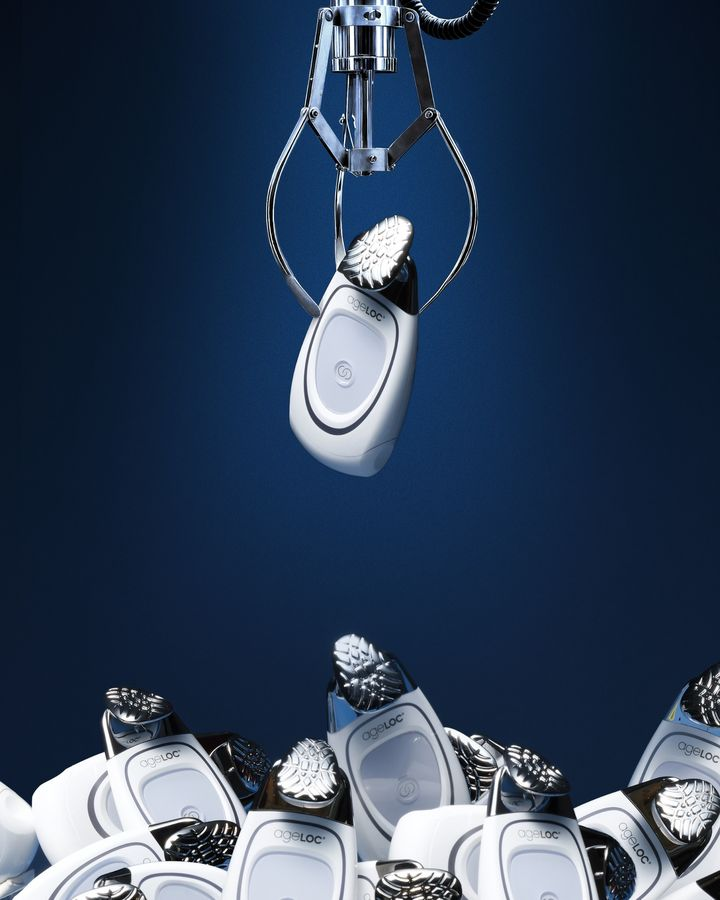

−30 %Gerät
ageLOC Galvanic Spa
Ein kleines Pflege-Gerät für zu Hause.
Laut Nu Skin: Mildert die Ausprägung feiner Linien und Falten.
- 2- bis 3-mal pro Woche
- mit den Facial Gels
- Gesicht, Körper, Kopfhaut
Ein kleines Pflege-Gerät für zu Hause. Fürs Gesicht verwendest du es 2- bis 3-mal pro Woche zusammen mit den Facial Gels. Im Set sind auch Aufsätze für die Partie um Augen und Mund, für den Körper und für die Kopfhaut.
Das sagt Nu Skin:
- Mildert die Ausprägung feiner Linien und Falten.
343,49 €statt 490,70 €Black-Friday-Preis 18. bis 20.11., inkl. MwSt.
Zu Nu Skin
Du bestellst direkt bei Nu Skin.
Zu Nu Skin
Du bestellst direkt bei Nu Skin.